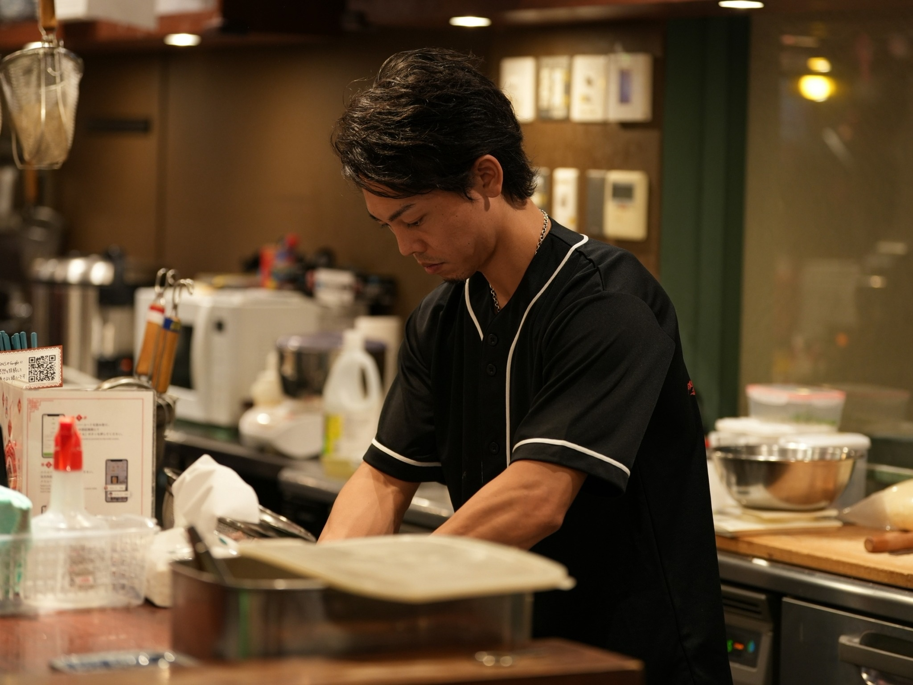
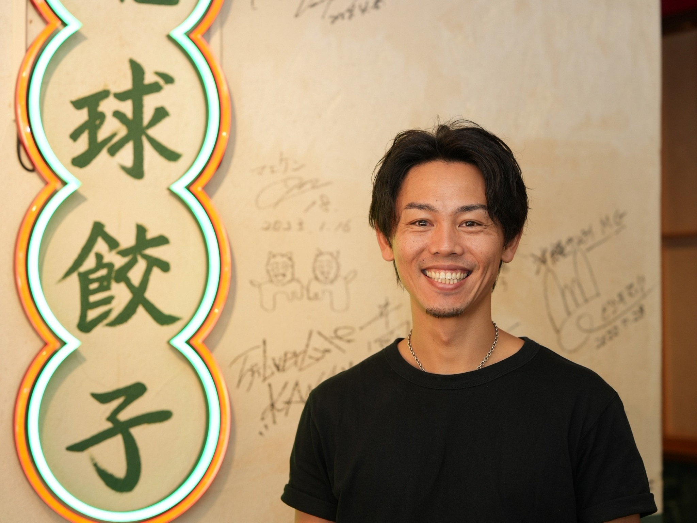

ISLAND JERKY / CORPORATE
想いをかたちに。
沖縄から、その先へ。
食を通じて生まれる出会いと可能性。
私たちは、一つひとつの仕事に真摯に向き合います。
01 / ABOUT US
私たちについて
株式会社Island Jerkyは、沖縄和牛を使用したビーフジャーキーなどを取り扱う企業です。
地域の食の魅力を大切にしながら、人と人、企業と地域をつなぐ可能性を見つめています。
企業理念 〇〇〇〇

02 / BUSINESS
事業内容
事業の詳細については、順次ご案内いたします。
01
食品関連事業
沖縄和牛を使用したビーフジャーキーなどを取り扱っています。
02
〇〇〇〇
事業内容 〇〇〇〇
03
〇〇〇〇
事業内容 〇〇〇〇

03 / MESSAGE
代表メッセージ
〇〇〇〇
代表取締役 〇〇〇〇
※掲載写真の人物の役職は未確認です。
04 / COMPANY
会社概要
会社名株式会社Island Jerky
代表者〇〇〇〇
所在地〇〇〇〇
設立〇〇〇〇
資本金〇〇〇〇
事業内容食品関連事業、〇〇〇〇
連絡先〇〇〇〇
05 / CONTACT
お問い合わせ
事業やお取引に関するご相談はこちらから。
〇〇〇〇